MICROSOFT COPILOT 博客
Microsoft Copilot 新功能速览 | 2026 年 9 月
本期整理 Microsoft Copilot 2026 年 9 月官方月度更新，覆盖聊天与移动端体验、插件和 Work IQ、Teams Phone、Word、PowerPoint、SharePoint、OneDrive，以及管理员的权威来源和定向调查能力。下文按官方文章顺序归纳功能与推出计划，所有时间均以文章表述为准。
面向用户的能力
Copilot Chat：全新设计与功能增强
-
Teams 与 Outlook 中的 Copilot 焕新9 月已推出
Teams 和 Outlook 中的 Copilot 正在采用与 Copilot 应用一致的新设计，简化导航与聊天操作，并提供新的工作组织方式。此次改版同时覆盖全屏 Copilot 和应用内的 Copilot 侧边窗格。
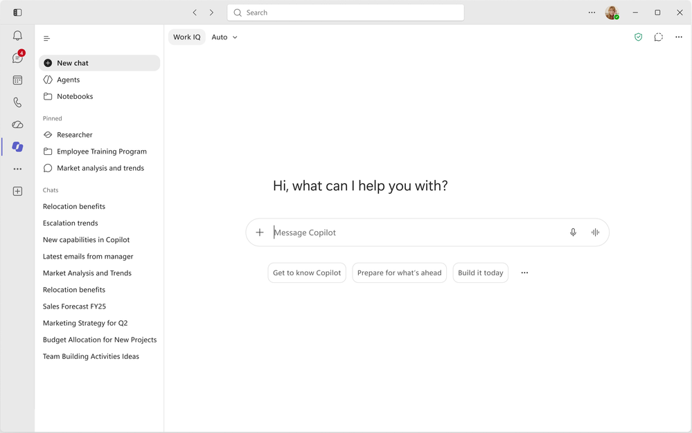
Teams 中焕新的 Copilot 聊天界面 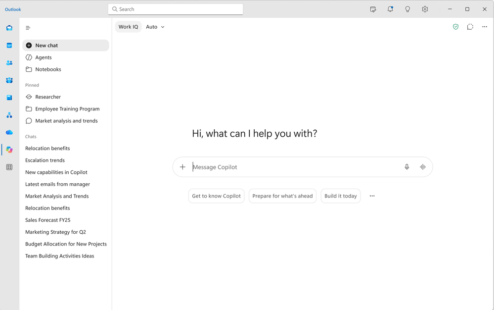
Teams Copilot 标签页中的新版体验 -
Edge 中的 Copilot 新标签页10 月推出
新的 Copilot 标签页将在一个搜索框中整合搜索、聊天与网页探索，同时呈现 Copilot 推荐操作及精选工作内容，减少在不同入口之间切换。查看路线图。
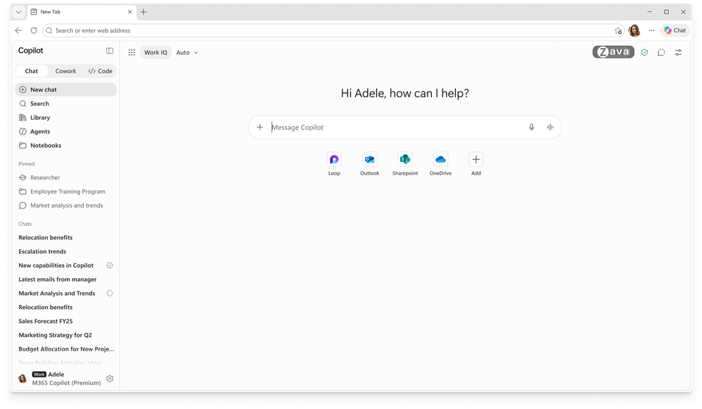
Microsoft Edge 中集搜索、聊天与工作内容于一处的 Copilot 新标签页 -
在提示词中直接调用代理与技能9 月已推出
撰写提示词时，用户可以用
/调用代理、用@调用技能，在不中断输入流程的情况下加入专门能力。查看路线图。 -
更准确地匹配扫描 PDF 内容9 月已推出
Copilot Chat 改进了对扫描 PDF 的搜索结果匹配，帮助用户更快定位相关资料，减少逐页查找的时间。查看路线图。
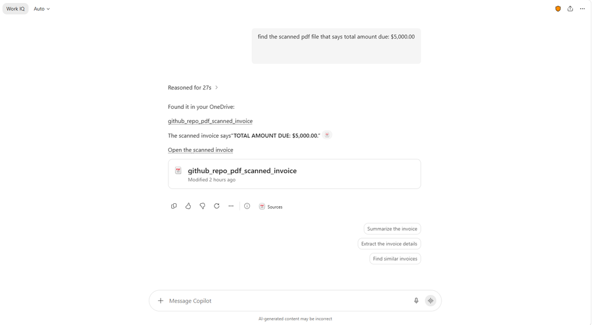
Copilot Chat 从扫描 PDF 中匹配相关内容 -
Android 端的 Copilot 编辑Android 9 月已推出；iOS 已于今年早些时候推出
Android 版 Word、PowerPoint 和 Excel 现在支持借助 Copilot 修改内容，让用户在移动设备上也能推进文档、演示文稿与电子表格工作。相应能力已于 2026 年早些时候在 iOS 推出。
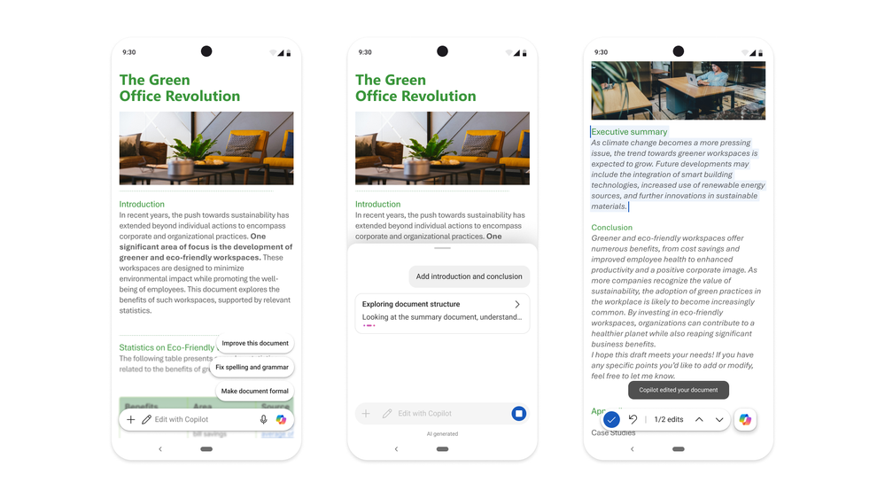
Android 版 Word 中的 Copilot 编辑体验
Copilot 应用：插件、连接器与 Work IQ 更新
-
新增连接器、插件与代理
更多业务系统与行业知识正在接入 Copilot。官方本月列出以下 33 项连接器、插件或代理，覆盖八个行业类别；文章未为每一项分别标注推出日期。可通过 Microsoft Marketplace 进一步了解。
行业 连接器、插件与代理 工业与制造 Autodesk、Resilinic、Vista Finance by Trimble 专业与商业服务 askpolly 金融服务 Fiscal AI、D&B Risk Analytics、D&B Finance Analytics、Zacks、MT Newswires、PrivCo、S&P Global Kensho、Square、Morningstar Credit Analytics 医疗健康与生命科学 AMASS、Cortellis Regulatory Intelligence、SciLeads、Causaly、BioRender、ClinicalTrials.gov、PubMed、PopHive、bioRxiv、DrugBank、CAS、Open Targets、NPI Registry、MedlinePlus 能源与资源 Rystad Energy 人力资源 TechWolf Analyst Agent 软件与科技 Webflow 零售与消费品 NielsenIQ、Cloudinary、Contentsquare -
统一的 Microsoft 插件注册表9 月已推出
Microsoft 插件注册表为微软、合作伙伴及自定义插件提供统一目录，支持在 Copilot 应用和 Microsoft 365 应用中提供技能、连接器等能力。IT 管理员只需发现并批准一次，即可通过 Microsoft 365 管理中心和 Agent 365 集中管理，并在各 Copilot 体验中一致地开放。开发者与合作伙伴也能一次发布、扩展部署，同时保留管理员的管控。
-
将 SharePoint Framework 交互组件带入聊天9 月向 Frontier 推出
SharePoint Framework 应用可以直接在 Copilot 聊天中呈现交互界面。用户无需离开对话，即可查看信息、操作控件和执行动作。
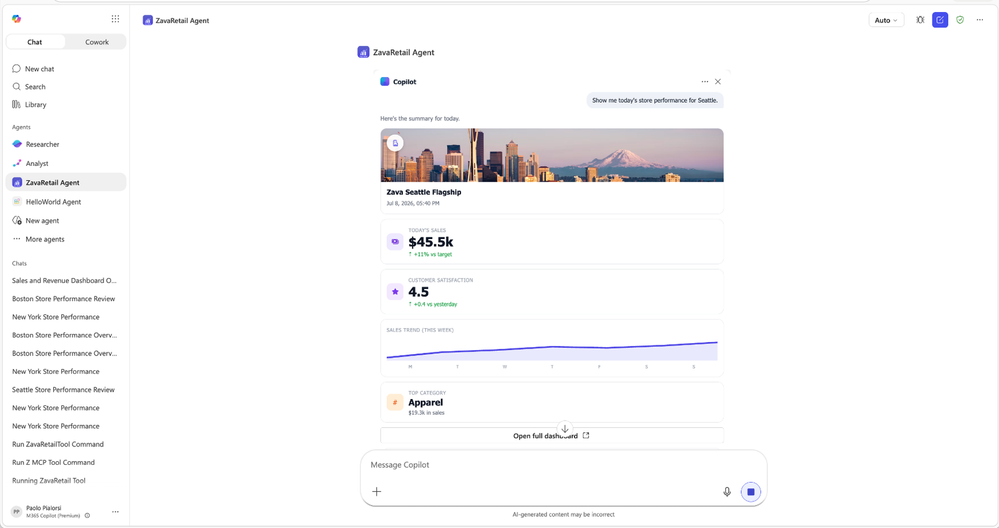
在 Copilot 聊天中直接使用 SharePoint Framework 交互组件 -
Copilot 移动应用中的 Record9 月已推出
Record 支持记录线下交谈和语音笔记，并在 Copilot Chat 中生成 AI 转录与摘要。用户可以继续追问、提取待办事项，或基于记录推进工作，适用于临时讨论、客户拜访及口述想法等场景。查看路线图。
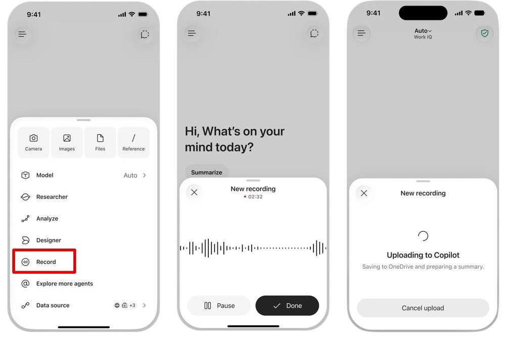
在 Copilot 移动应用中录音，并将内容交给 Copilot 整理
Teams Phone Agent：面向来电的 AI 接待
-
接听常见来电并完成转接9 月已推出
Teams Phone Agent 面向已使用 Teams Phone 的客户服务组织和部门，例如分支机构及 IT 服务台。它可以处理重复性咨询、回答常见问题、预约或改约，并支持超过 60 种语言。需要人工介入时，可将来电转给合适的部门或员工，同时提供 AI 生成的对话摘要，让来电者减少菜单操作和重复解释。
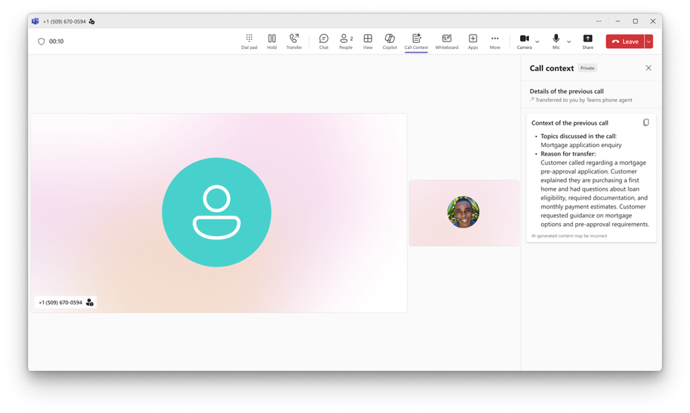
Teams Phone Agent 为通话生成的对话摘要
Word 中的 Copilot：来源引用与图像调整
-
在回答中查看来源引用9 月已推出
Copilot 在 Word 中的回复现在会直接显示相关网页与工作资料的引用，帮助用户了解回答依据，并回到相应来源核对内容。
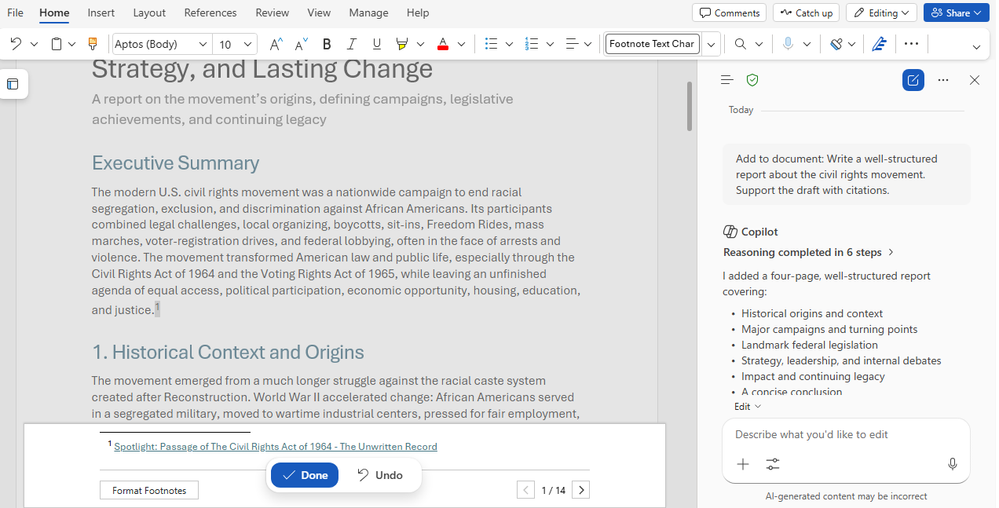
Word 中的 Copilot 回复显示来源引用 -
直接排列和修改图片与形状9 月已推出
用户可以让 Copilot 在 Word 文档内直接调整图片和形状等视觉元素，减少手动排列与布局操作，更轻松地改善文档呈现效果。
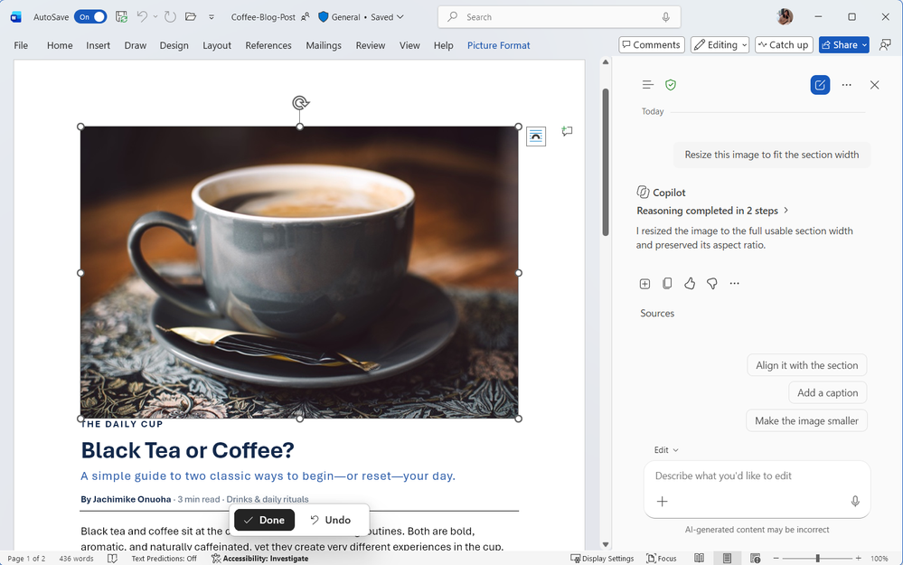
通过 Copilot 调整 Word 文档中的图片
PowerPoint 中的 Copilot：技能、连接器与后台执行
-
用技能封装多步骤演示文稿流程
技能把需要多个步骤的演示文稿工作整理为可重复使用的能力，帮助 Copilot 按既定流程完成任务，用户不必逐步重写提示词。了解品牌套件与技能。
演示：PowerPoint 自定义技能（视频来自微软官方文章，播放需联网） -
预置技能9 月已推出
新的预置技能面向常见的演示文稿改进需求：「Explain this presentation」帮助检查叙事、受众适配与整体流程；「Sharpen slide titles」则改写幻灯片标题，使标题更准确地概括该页内容。
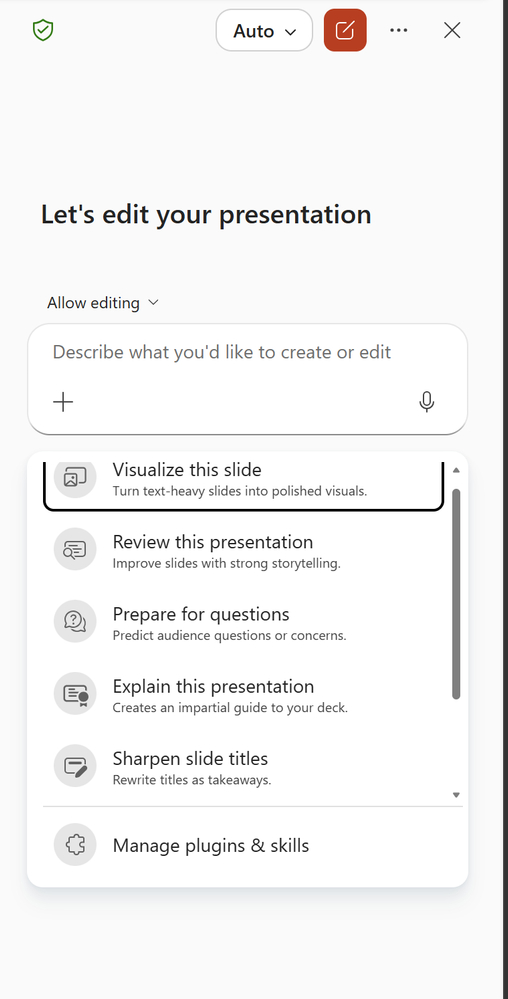
PowerPoint 中可用的预置技能 -
由管理员统一分发技能9 月已推出
管理员可以把经过批准的技能发布给指定用户、用户组或整个组织，团队成员不必再分别创建或上传同一项技能。
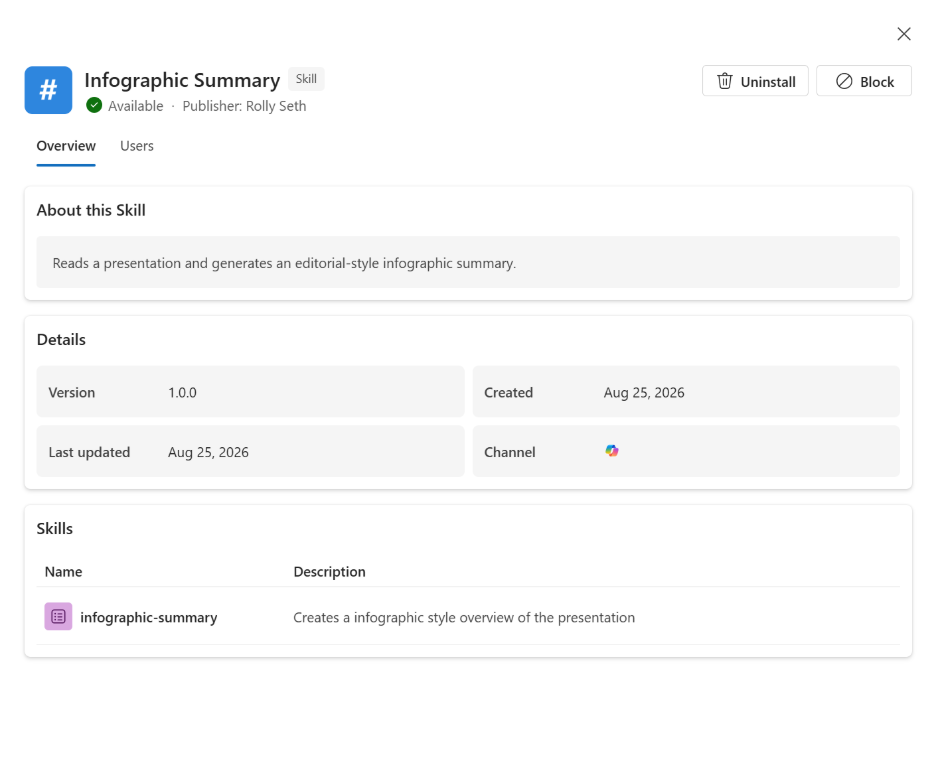
管理员向组织分发经过批准的 PowerPoint 技能 -
品牌套件支持技能10 月推出
品牌管理者可以把可复用的流程技能与组织的视觉规范一同放入品牌套件，让演示文稿既遵循外观要求，也采用统一的工作流程。查看品牌技能说明。
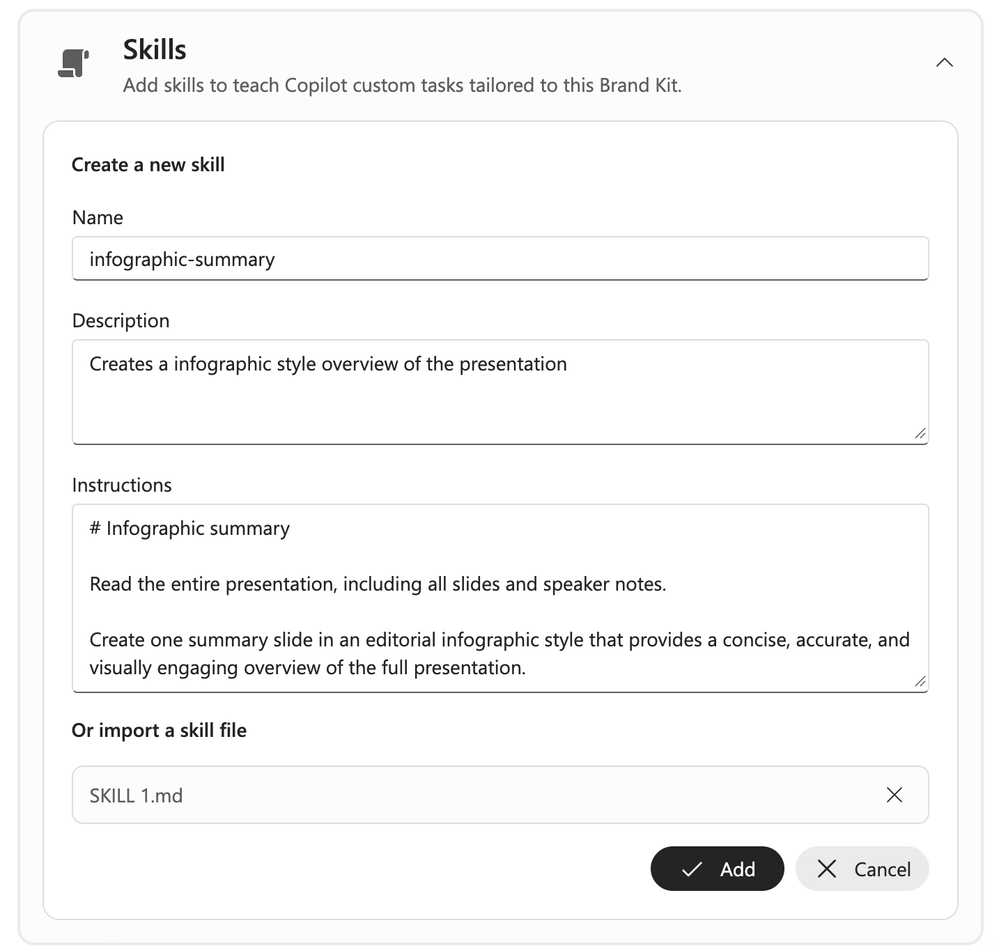
品牌套件中的技能与视觉规范 -
通过连接器引用业务资料9 月已推出
用户在创建幻灯片时，可以直接使用已连接应用和数据源中的信息，使演示文稿基于组织已有资料接地，减少在多个系统间查找和搬运内容。
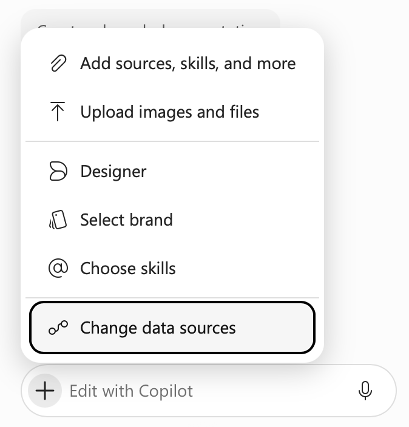
PowerPoint 中的连接器与数据源选择 -
长时间任务在后台继续运行10 月推出
用户离开 PowerPoint、切换设备、离线或结束当天工作后，Copilot 仍可继续执行长时间任务，并在完成或需要用户关注时发出通知。该体验覆盖桌面、Web 和移动端。
SharePoint 中的 Copilot 正式发布
OneDrive 中的 Copilot 正式发布
-
与 SharePoint 一致的内容体验9 月已推出，正式发布
重建后的 Copilot in OneDrive 与 Copilot in SharePoint 使用相同基础，提供更一致的内容创建、组织和文件使用体验，让工作不因内容所在位置不同而割裂。其许可方式与 Copilot in SharePoint 一致；原文未列出具体许可方案。
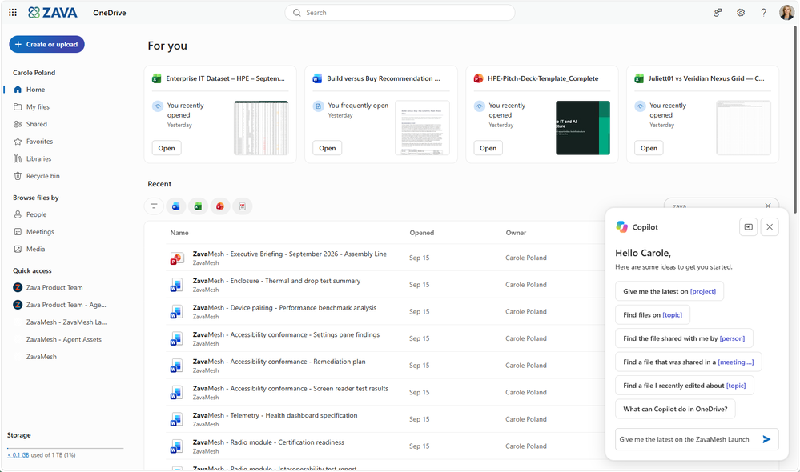
OneDrive 文件夹中的 Copilot 界面
面向 IT 管理员的能力
Microsoft 365 管理中心：权威来源管理
Copilot 仪表板：定向 Pulse 调查
-
结合采用数据收集有针对性的反馈9 月已推出
负责人可以使用动态调查名单发起定向 Pulse 调查：依据 Copilot 采用数据生成受众，并使用既有条件筛选，减少手工维护收件人名单。将员工感受与采用信息结合，有助于评估体验、发现提升采用率的机会。调查采用聚合的人群级报表保护隐私，而非呈现个人使用情况。查看路线图。
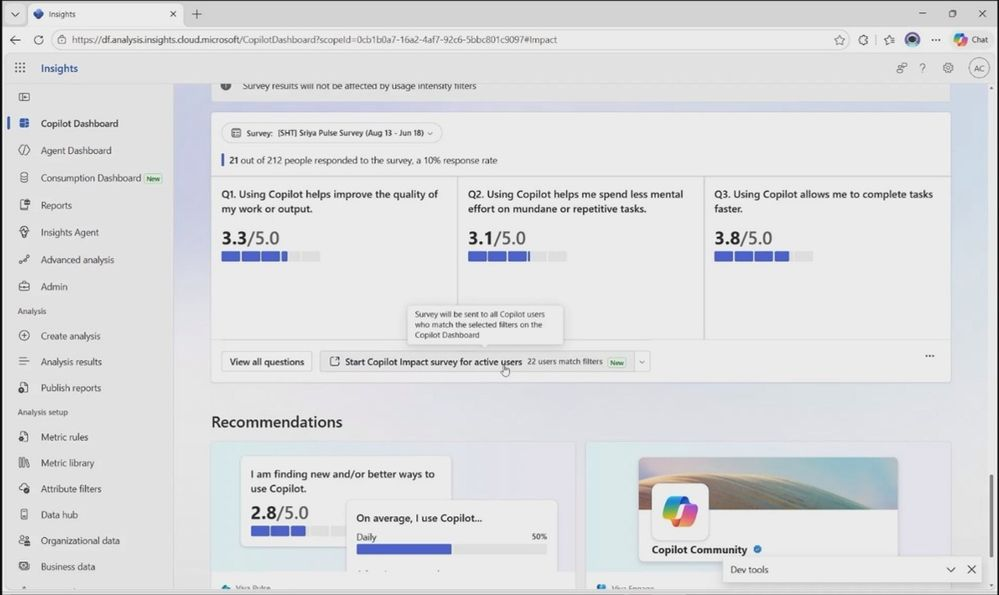
Copilot 仪表板中的调查问题与反馈 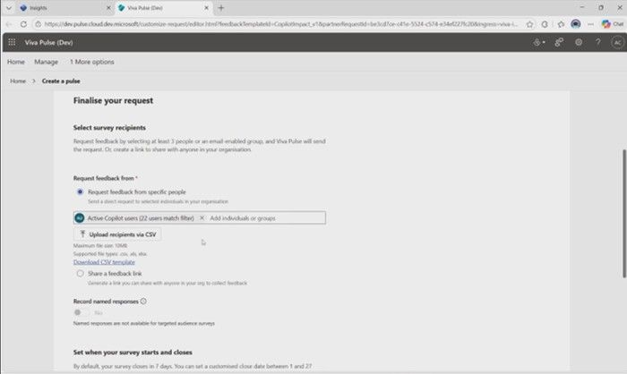
通过定向受众配置 Copilot 调查